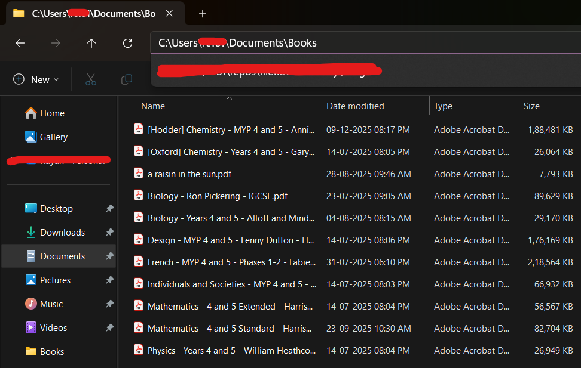

Certain documents require long-term retention, including academic records, certifications, contracts, and personal archives. These files should be stored in secure, clearly labelled locations and backed up redundantly.
File formats for long-term preservation should prioritise compatibility, such as PDF for documents. Proprietary formats risk becoming unreadable over time.
Digital longevity requires foresight. Storage decisions today influence accessibility years later.

Ethics of File Management
File management carries ethical responsibilities. Sharing someone else's work without permission violates privacy and intellectual property rights.
Proper attribution, secure storage of personal data, and respect for confidentiality are fundamental principles. Digital organisation is not purely technical; it is moral.
Module Assessment
Question 1
Is it okay to share someone else's file?
Question 2
Which type of file should usually be preserved long-term?
Question 3
Why is long-term storage important?
Question 4
A student stores important documents only on one laptop. What is the risk?
Question 5
What is an ethical rule of file management?
Question 6
You find a classmate's project file on a shared drive. What should you do?
Question 7
Which file format is commonly used for long-term document storage?